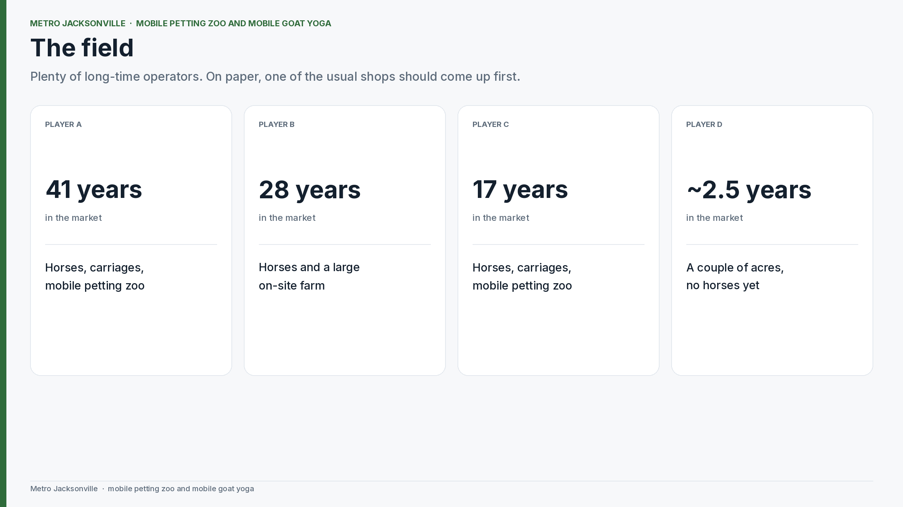
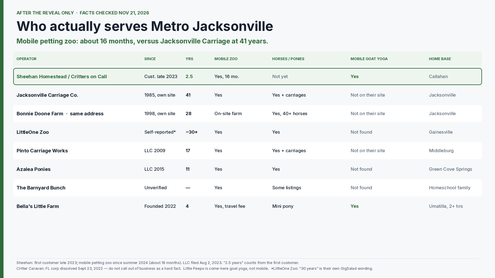
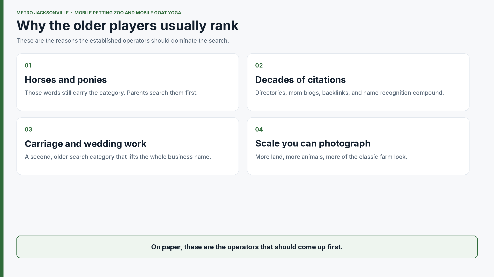

Critters on Call · Recording kit · November 21, 2026
Blind AI demo. Show the playbook, then make the asks.
Open as an experiment. Do not name your business, and do not hint at an outcome, until after the search. Show the field visuals first, paste the questions into a logged-out incognito window, and point at whatever comes back.
Confirm before you say it on camera
Acreage: say “a couple of acres.” Official partner materials say about 3 acres (the 1.5-acre farm plus two Critter Glades acres, residence excluded). Other notes have said a 4-acre farm with 2 usable acres, or “1 of 4 working.” Do not pick a precise split on camera until you lock one number.
Age — after the reveal only: “First customer in late 2023; petting zoo since summer 2024, so about 2.5 years in business and about 16 months of mobile petting zoo.” “Under 3 years” and “2.5 years” are fine — they count from the first customer, not the August 2, 2023 LLC filing. On the age-versus-rank beat, add that the petting zoo is about 16 months old versus Jacksonville Carriage at 41 years. Do not mention your business before the search.
“28 to 149 years”: the 28 is Bonnie Doone (founded 1998, their site). The 41 is Jacksonville Carriage Co. (since 1985, their site). I could not verify a 149-year-old competitor. Do not say 149 unless you can name who that is.
Question 4 of the locked cold set was truncated in the saved record after “Which seems most credible t…”. Recommended wording below: “Which seems most credible, and why?” Confirm if you remember a different ending.
Critter Caravan: their Florida corporation was administratively dissolved September 23, 2022. Directory listings and a LinkedIn profile still exist. Do not say “out of business” as a hard fact.
Little Peeps Farm is Jacksonville come-here goat yoga, not a mobile operator. Do not put them in the competitor comparison. Have a beat ready if they appear in a goat-yoga result.
Pre-flight checklist
Do this once, before you hit record. Leave this kit open on a phone or a second screen. The recording window should look clean.
Tab order, recording window only
ChatGPT in a fresh incognito window, logged out. No chat history, no custom instructions, no memory about the farm. If ChatGPT forces a login, do not use an account that has already talked about Sheehan Homestead. Fall back to Google AI Overview first so the “blind” frame still holds.
Google in a second incognito window, logged out. Ready for the same prompt, so you can point at an AI Overview.
Nothing else in that window yet. Do not pre-open the website, Facebook, LinkedIn, or these visuals in the recording window. If a viewer sees you tab past your own brand before the search, the demo looks rigged.
Before the search: show the generic landscape and “Why the older players usually rank.” They describe the field and set the expectation that a long-time horse shop should come up. They name no one.
After the reveal only: the named competitor snapshot, then — if you have time — LinkedIn with Ann-Marie, Facebook, the prize wheel, the dashboards, or the app/game.
Prompts, in run order
Two sets. The locked cold four are the cleaner “blind” test. The complementary-keyword set is the software-demo story: show the combo, then drop a keyword to make it fairer. Do not call the combo a fully cold test — “Metro,” “and,” and “Callahan” all lean a little.
How to use them For a 90-second cut, run only Prompt 1, then the same words in Google. For a 3.5-minute cut, run Prompts 1, 2, then 6, then Google. Save 3–5, 7, and 8 for the longer teaser or for a second take.
1 · Lead, both cutsComplementary combo
What is the best option for mobile goat yoga and mobile petting zoo in Metro Jacksonville, Florida?
Start here for the complementary-keyword story. After it returns, say you knew this one might show strong because the two offers travel together — then make it fairer with Prompt 2.
2 · 3.5-min cutDrop a keyword
What is the best mobile goat yoga option in Metro Jacksonville, Florida?
This is the “make it fairer” beat. You dropped the bigger petting-zoo keyword. Point at whatever is still on top.
3 · Locked cold #1Cleaner blind test
Best mobile petting zoo in Jacksonville, FL?
Use this as the opener instead of Prompt 1 if you want the strict cold test, or run it in a fresh incognito chat after the combo so nobody can say the first prompt led the model.
4 · Locked cold #2Follow-up, same thread
What about mobile goat yoga?
5 · OptionalSlightly leading — has Callahan
Best mobile petting zoo in Metro Jacksonville or Callahan, Florida?
Skip this in the tight cuts. “Callahan” is your city. If you use it, don’t call the test blind.
6 · 3.5-min cutLocked cold #3 · same thread
Which of these has the most momentum online, and when was each one founded?
This is the age-versus-rank beat. Let the model say the founding years. Then bring up the named snapshot if you need to correct or tighten what it got wrong.
7 · Long teaserLocked cold #4 · wording to confirm
Which seems most credible, and why?
Saved record was cut off after “Which seems most credible t…”. If you remember “to book” or “to invest in,” use that instead.
8 · Long teaser or #2 backup
Who offers both mobile goat yoga and a mobile petting zoo in the Jacksonville, Florida area?
Use this if a horse-and-carriage shop took #1 on a single-keyword search. It brings the complementary offer back without arguing.
9 · Long teaser
Rank the top mobile petting zoos and goat yoga providers that serve the Jacksonville, FL metro area.
Google AI Overview, same window, new tab Paste Prompt 1 — or locked cold #1, if that is the test you want to show. Do not add extra words. If an Overview appears, point at it. If it does not, do not apologize; point at the ordinary local pack or the first organic results and keep moving.
90-second cut — word for word
About 180 spoken words, plus waiting on the model. If the model is slow, use Path A (one search, then the close). If it is moving, use Path B (same prompt in Google after ChatGPT).
Path A — one search, then the ask
0:00
We’re going to run a quick experiment and search a few keywords: mobile petting zoo, mobile goat yoga.
0:08
Plenty of providers have been doing this a long time. There are some big ranches and decades-old horse operations out there. We’re specifically looking for mobile petting zoo and mobile goat yoga. You’d expect one of the usual shops to come up. Let’s see what happens.
0:24
This is a fresh incognito window. I’m logged out.
0:28
Paste Prompt 1. Wait. Do not talk over the first result. When it settles, point.
0:48
After the reveal — keep this short. You can add more later.
0:50
First customer showed up late 2023. The mobile petting zoo didn’t start until summer 2024 — about two and a half years in business, and about 16 months of the petting zoo, versus Jacksonville Carriage at 41 years.
1:10
If you want in, I have a 49 percent partner seat in the flagship, and I have a sponsorship path. I’ll leave the one-pager.
Path B — ChatGPT, then Google, same prompt
0:00
Same open as Path A, through “You’d expect one of the usual shops to come up. Let’s see what happens.”
0:18
Fresh incognito, logged out. Same question a parent would type.
0:24
Paste Prompt 1. Wait. Point at the result.
0:42
Now the same words in Google, also incognito, also logged out. I don’t have a Gartner for petting zoos. This is the closest thing to a third-party expert.
0:52
Paste Prompt 1 into Google. Wait for the AI Overview if it appears. Point.
1:10
You don’t have to believe I take this all the way. If you want in, I have a 49 percent partner seat in the flagship, and I have a sponsorship path.
If the result is not #1 Do not force it. Use the #2 beat in “If this happens,” then go to the close. Never say “we always come up first” before the live result, and never paper over a miss.
3.5-minute cut — word for word
This is the main take. Open as the experiment, show the field visuals, then Prompts 1, 2, 6, then Google. The named snapshot comes out after the search, not before.
0:00
We’re going to run a quick experiment and search a few keywords: mobile petting zoo, mobile goat yoga.
0:08
Plenty of providers have been doing this a long time. There are some big ranches and decades-old horse operations out there. We’re specifically looking for mobile petting zoo and mobile goat yoga. You’d expect one of the usual shops to come up.
0:22
Put up the generic landscape, then “Why the older players usually rank.” Do not name anyone. Do not say who you are.
0:28
On paper, these are the operators that should come up first. Let’s see what happens.
0:36
This is incognito. I’m logged out. I’m going to paste a question and let you watch.
0:48
Paste Prompt 1 into ChatGPT. Wait in silence. Point when it settles.
1:10
That’s us. I knew a combined question might show strong, because the two offers travel together. So let’s make it fairer and drop the bigger keyword.
1:20
Paste Prompt 2 in the same thread, or in a fresh incognito chat if you want it cleaner. Wait. Point.
1:40
Still us — or still near the top. Now the question that makes the age gap obvious.
1:46
Paste Prompt 6. Wait. Point at the founding years the model gives you. Correct only a clear miss, and only with a sourced fact.
2:05
Same words in Google, also incognito. If an AI Overview comes up, that’s a second engine, not my account.
2:12
Paste Prompt 1 into Google. Point at the Overview, or at the local pack if no Overview appears.
2:25
After the reveal only: share the named snapshot. Keep the rest short. You can add more later.
2:28
First customer showed up late 2023. The mobile petting zoo didn’t start until summer 2024 — about two and a half years in business, and about 16 months of the petting zoo, versus Jacksonville Carriage at 41 years.
2:48
Ann-Marie is a teacher. She built the STEM curriculum. If you want in, there are a few ways to say yes. A 49 percent silent-partner seat in the flagship, which we call Franchise Zero. Or a sponsorship. I’ll leave the one-pager.
Optional LinkedIn close, if you still have 15 seconds “That’s Ann-Marie and me. She’s the teacher who built the STEM piece. I spent my last career in software sales, including teaser demos that got us into rooms we had not been invited to. This is the same move.”
Clip split, and the 10–15 minute teaser
If you would rather ship several short videos than one take, cut here. Each clip should stand alone, with a one-line open and a one-line close.
Clip
Time
What happens
In / out lines
1. Experiment
45–60s
The experiment opening, then the field visuals. No search yet. Do not name the business.
In: “We’re going to run a quick experiment and search a few keywords: mobile petting zoo, mobile goat yoga.” Out: “You’d expect one of the usual shops to come up. Let’s see what happens.”
2. Blind demo
2–3 min
Incognito. Prompt 1. Point.
In: “This is incognito. I’m logged out.” Out: Point at the result. Do not preview it.
3. Make it fairer
2–3 min
Prompt 2, then Google on Prompt 1.
In: “Let’s drop the bigger keyword.” Out: “A second engine, not my account.”
4. Teardown
2–3 min
Prompt 6, then the two visuals.
In: “Now look at when each one was founded.” Out: “Horses and decades usually win. We still showed up.”
5. STEM, app, asks
90s–2 min
Ann-Marie, STEM, homeschool, dashboards and game, then the ask menu.
In: “Here’s the rest of what we’ve already built.” Out: “Partner seat, or sponsorship. I’ll leave the one-pager.”
10–15 minute teaser — run of show, not a word-for-word script
Open, 1 minute. The experiment opening, word for word. No mention of your business. No hint of the outcome.
The field, 1 minute. Show the generic landscape and “Why the older players usually rank.” Plenty of long-time providers, big ranches, decades-old horse operations. You’re looking specifically for mobile petting zoo and mobile goat yoga. The audience should expect one of the usual shops to come up.
Problems, 2 minutes. Parenting is hard — we turn good parents into goat parents. The juicy one is B2B event budgets, a professional market that repeats across Florida. Small-business owners struggle, so marketing and media placement is another line.
Blind demo, 4–5 minutes. Prompts 1 and 2, then locked cold #1 in a fresh chat if you want a cleaner test, then Prompts 6 and 7, then Prompt 8 if a horse shop took a single-keyword search, then Google. Stay quiet while results load. Point, don’t over-narrate.
Teardown, 2 minutes. Named snapshot and “Why the older players usually rank.” Bella’s is far. Barnyard Bunch is a homeschool family, in their own words. Critter Caravan’s corporation was dissolved in 2022 — don’t overclaim. Little Peeps is come-here, not mobile.
STEM, app, proof, 2 minutes. Ann-Marie and the STEM curriculum. Homeschool. 100+ Google reviews. Facebook at almost 10,000 followers. Dashboards, dunk lists, prize wheel, and a game that leads people back to the farm. The Play Store launch is a marketing stunt you can turn on — don’t say it is already live unless it is.
Several ways to win, then the asks, 2 minutes. “You don’t have to believe I take the ball the whole way. A regional Florida player already makes money.” Then Franchise Zero at 49 percent, or sponsorship. Invite the real meeting. Stop.
If this happens
You are #2, or tied
“Second is still the surprise. Look at who is first — if it’s a horse-and-carriage shop that’s been here for decades, that is the expected default.” Then paste Prompt 8, who does both, and let that result talk.
Pinto is first
“Pinto Carriage Works is a real Middleburg operator, filed in 2009, with ponies and carriages. Their site does not offer mobile goat yoga. That’s why the combined question is the fair test of the offer.”
Jacksonville Carriage or Bonnie Doone is first
“That’s the 1985 carriage-and-pony business, or the 1998 farm at the same address. They should win a horse search. They do not offer mobile goat yoga on their site.” Then Prompt 8.
LittleOne Zoo is first
“That’s a Gainesville operator that travels a wide radius, including Jacksonville. They’ve self-reported 30 years and they do ponies. Different offer. Let’s see who does both.” Then Prompt 8.
Bella’s is first or in the mix
“Bella’s Little Farm is real, and they do offer mobile goat yoga. They are based in Umatilla, more than two hours south, and they charge a travel fee to reach Jacksonville.”
Barnyard Bunch is in the mix
“That’s a real mobile petting zoo. In their own words, they are a homeschool family who bring the farm to you. Different scale, and I have not seen mobile goat yoga on their site.”
Critter Caravan appears
“Their Florida corporation was dissolved in September 2022. Old listings still float around. I would not treat them as a live competitor unless someone can show they are still booking.”
Little Peeps appears
“That’s a Jacksonville come-here farm, not a mobile operator. Different category. I’m asking about who comes to you.”
No AI Overview in Google
Don’t apologize. “Sometimes it gives an Overview, sometimes it doesn’t. Look at the local pack and the first results instead.” Keep moving.
ChatGPT demands a login
Do not use an account that has already talked about the farm. Switch the demo to Google incognito, or to a clean throwaway login, and say so out loud: “I’m not using an account that knows us.”
The model invents a founding year
Don’t fight it at length. “I’m going to put the sourced years on screen.” Then the named snapshot. Never invent a correction you cannot source.
You want to mention prior tests
Only after a live result, and only as optional color: “That’s the same pattern I’ve seen in earlier cold tests, including Google’s AI Overview.” If today’s result missed, do not reach for old tests to paper over it.
Objections, one-line answers
“You gamed this. It’s just SEO.”
This is incognito, logged out, no account history. You’re watching a question a parent would type.
“ChatGPT is just guessing.”
That’s why we run the same words in Google. Two engines, same question, not my account.
“You’re small, and you don’t have horses.”
That’s the point. The older shops have horses and decades. If a young farm still shows up, the playbook is doing the work.
“This is only Jacksonville.”
You don’t have to believe I take it all the way. A professional event market already exists across Florida. A regional player makes money.
The close, and the asks
End on a menu, not a single take-it-or-leave-it ask. Keep terms light in the 90-second and 3.5-minute cuts. Save the structure for the meeting that this demo is trying to earn.
Menu
If you want in, there are a few ways to say yes. A 49 percent silent-partner seat in the flagship operation, which we call Franchise Zero. Or a sponsorship. I’ll leave the one-pager.
If they lean in
The partner seat is a lease of the working acres — not the house — plus the animals, the vehicles, the list, the dashboards, and the code. Profit share is quarterly. There is a buyback window. We can walk the term lengths in the next meeting.
If they hesitate
You don’t have to buy that I’m a tech company. Buy a professional operation in a market that already repeats across Florida, with a playbook you just watched work.
Stop
Don’t add a third ask. Don’t keep talking. Leave the one-pager and ask for the real meeting.
Visuals
Show (a) and (c) before you paste a prompt. They describe the field and set the expectation that a long-time horse shop should come up. The named snapshot (b) is after the reveal only. All three are 16:9 for a screen share.
(a) Generic field — before the search, no names, no highlight

generic-underdog-landscape.png · Show this before the search. Every card has the same weight. It does not name anyone, and it does not hint who is who.
(b) Named competitor snapshot

named-competitor-snapshot.png · After the reveal only. First customer late 2023; about 2.5 years in business; mobile petting zoo about 16 months, versus Jacksonville Carriage at 41 years.
(c) Why the older players usually rank

why-older-players-rank.png · Show this before the search, with the generic field. It sets the expectation that the old horse operations should come up first.
Sources, checked November 21, 2026
Operator
Fact used
Source
Jacksonville Carriage Co. (Jack’s)
Mobile petting zoo, ponies, carriages; “since 1985”; 12558 Old Kings Rd, Jacksonville
Gainesville / Bell; pony rides and mobile zoo; travels up to 200 miles; recent Jacksonville-area bookings; “30 years” is their own GigSalad wording — independent founding year unverified
Florida corporation filed August 16, 2010; administratively dissolved September 23, 2022. Public site returned an error when checked. LinkedIn still listed the owner as current. Status: stale, not a proven closure
Florida corp P10000067350; site check Nov 21, 2026
Little Peeps Farm
On-site goat yoga in Jacksonville, widely reported from 2019. Not a mobile operator. Leave off the comparison card
News4Jax, Feb 25, 2019; Flagler College Gargoyle
Sheehan Homestead LLC
Florida LLC filed August 2, 2023, 44065 Cushman Road, Callahan. First Facebook/website customer late 2023; mobile petting zoo prototype July/August 2024 (about 16 months as of Nov 21, 2026). “2.5 years in business” counts from the first customer.
Florida LLC L23000363396; timeline from Michael, Nov 21, 2026
Farm To You Revue / Noah’s Landing
Real Florida mobile zoos (Dunnellon, 2016; Daytona Beach, 2000) but based well south of Metro Jacksonville. Not on the snapshot
Sunbiz L16000120271; Noah’s Landing site / BBB
Google reviews: say “100+” (104 as of October 31, 2026). Facebook: about 7,700 followers; “almost 10,000” is approved wording. Animal counts, if you mention them, always say “at least.” No Grok branding on any of this.
Recording kit for a screen-recorded elevator pitch. Nothing in this document was sent to anyone. Visuals were rebuilt for this kit; the earlier image files from the other thread were not found on this machine.